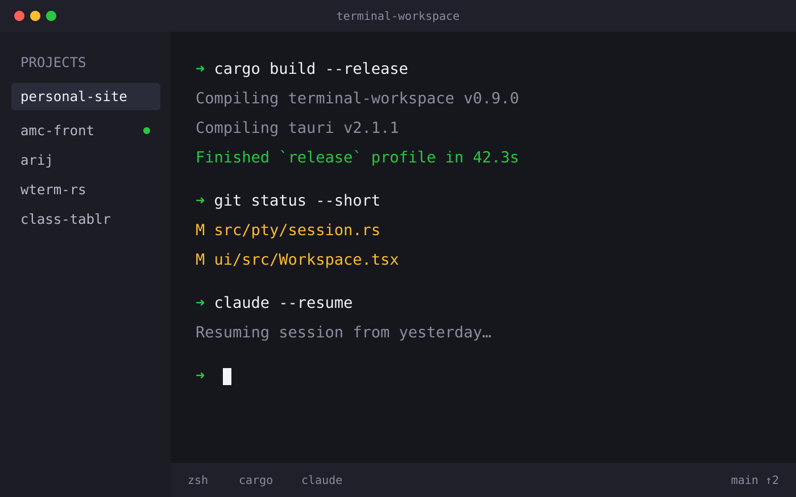
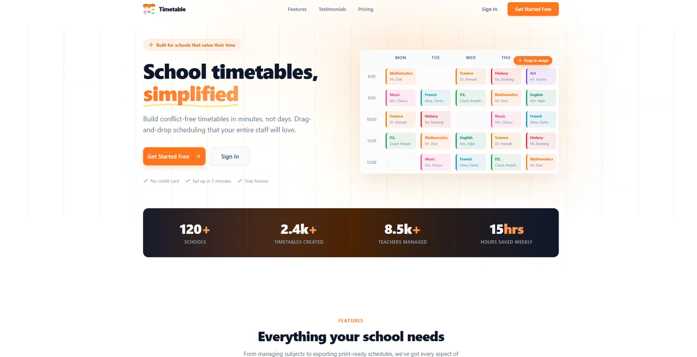
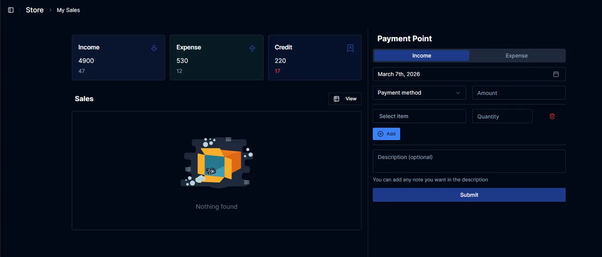
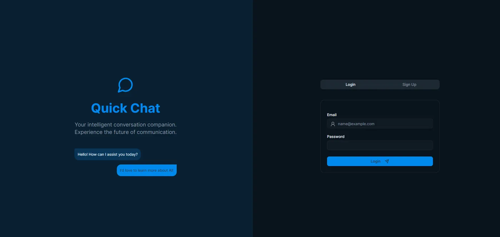
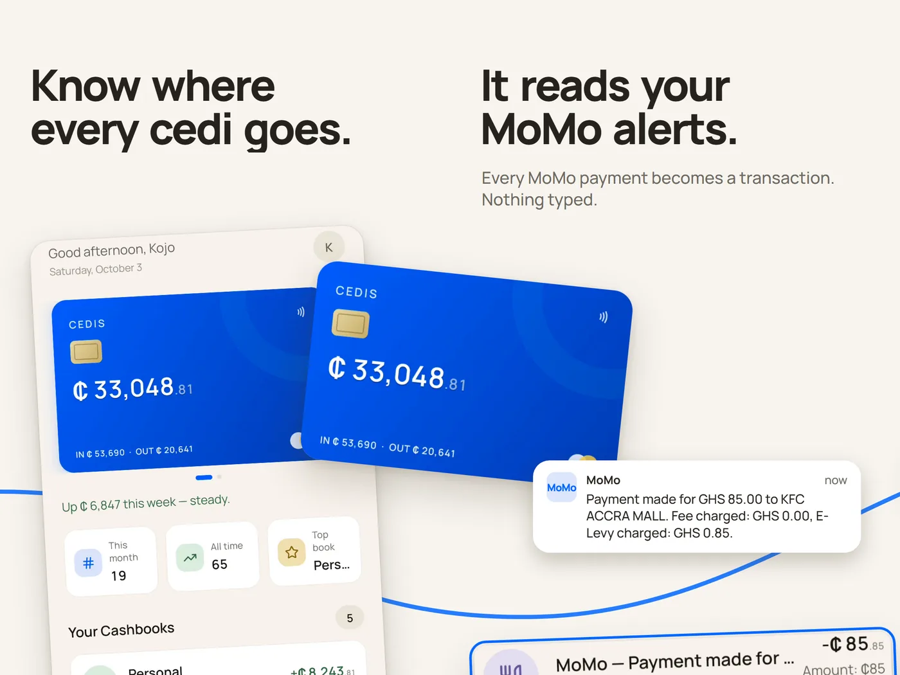

Patrick Ackom
Fullstack engineer. I make apps for the web, phones and desktops, and lately I'm building the terminal I write them in.
About
I like software you don't notice. It opens fast, does what you meant, and gets out of your way. Getting there takes both halves of the job, the design and the plumbing, and I enjoy both.
Most of my days are TypeScript: React and Next.js on the front, Node.js and Postgres or Firebase behind it, React Native and Expo when it has to live on a phone. More and more of it involves language models, wired into products through the OpenAI and Claude APIs.
Outside client work I build tools for myself, which is how I ended up writing a terminal workspace in Rust. I also read a lot of other people's source code, and sometimes send a fix back.
Selected work
-
Terminal Workspace
A workspace for juggling many projects and terminals at once. Terminals keep running when you switch away, and it has an editor, git and GitHub tools, Claude Code session history, and remote access from your phone.

-
Class Tablr
Builds school timetables. You drag classes and teachers into time slots and it flags clashes as you go, so a week's schedule takes minutes.

-
Store Room
Inventory tracking: what's in stock, what's on order, and what's about to run out.

-
Quick Chat
Live chat between a company and its customers, plus a package you can install to add the chat widget to any app.

-
Expense Tracker
Tracks where every cedi goes. It reads your MoMo payment alerts and logs them for you, with fees and E-Levy split out, keeps a separate book for each part of your life in any currency, warns you before a budget runs out, and remembers who owes you. Free, with no ads.

Where I've worked
-
2023 to now
Senior fullstack engineer at SpringKnights
Web apps and AI features for clients in several countries. I make the design and architecture calls, mentor junior developers, and help set technical direction across product teams.
-
2022 to 2023
Fullstack developer at Asqii
Built products from scratch for clients in education and finance, and shipped more than 20 major features aimed at speed and everyday usability.
-
2020 to 2021
Junior frontend developer at Detosphere
Responsive sites and email templates for a startup. Cut page load times by 60% by cleaning up and trimming the code.
Got something that needs building?
I'm taking on new projects. Email is the fastest way to reach me.
patrickackom003